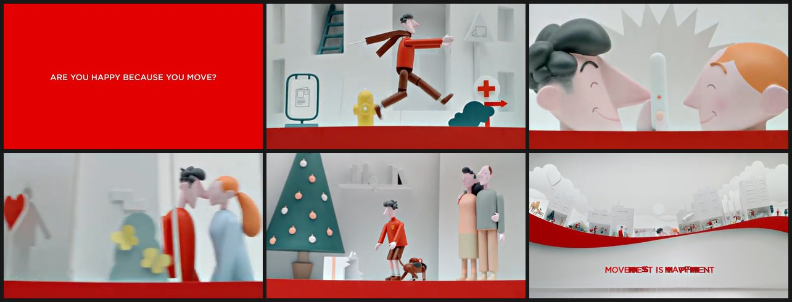
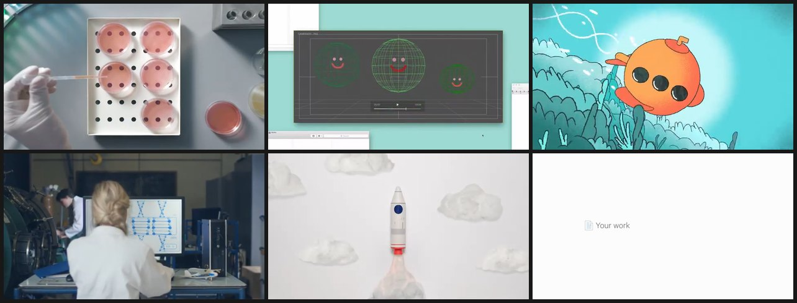
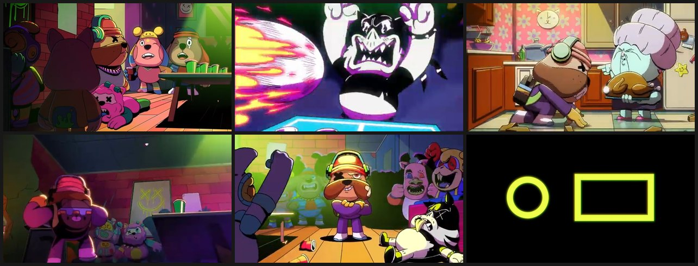
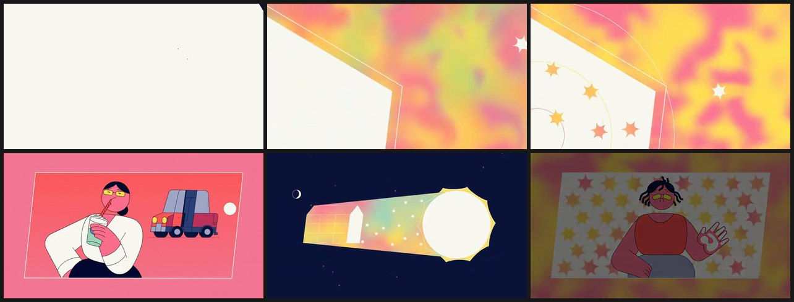
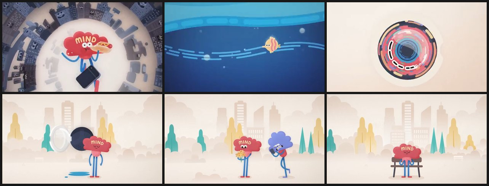
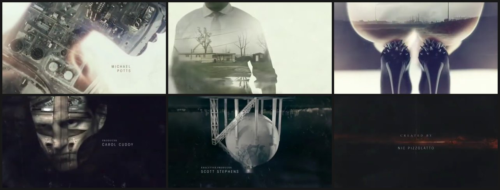
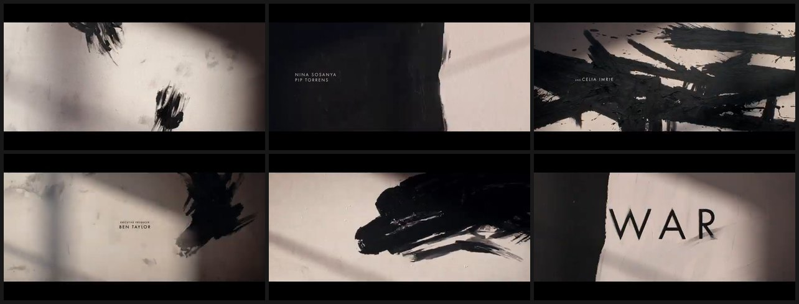
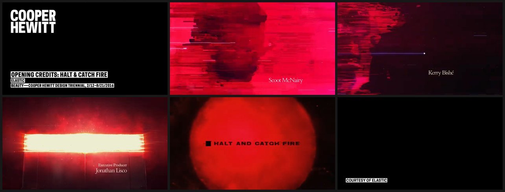
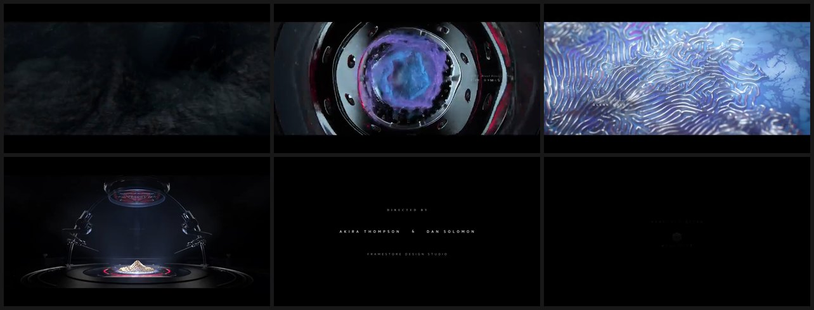

모션그래픽 · 3D 레퍼런스 39편
기존 14편 + 새로 25편(NEW). 최정상 스튜디오 · 브랜드 본사 · 수상작 위주로 44편을 내려받아 프레임을 보고 39편을 남겼습니다. 기준: 스타일의 폭 · 세련됨 · 깔끔함.
그림은 영상마다 6장면, 원본 비율 그대로(정사각 · 시네마스코프 포함). 카드 왼쪽 위 칸을 누르시면 아래 띠에 고르신 번호가 모입니다.
보고 뺀 것: Toyota Aygo(Zeitguised, 어둡고 낡음) · fritz-kola(Kouhei Nakama, 소재 약함) · Psyop 「Power of Play」 · Hornet 「Surf」(과한 캐릭터) · Freehand Dyson(낡은 제품 CG) / 이전 판에서 뺀 것: Aixsponza Seed · Google I/O 2024 · Stripe Sessions · vaylens · aflow.
① 소프트바디 · 공기 3D
부풀고 눌리고 튀는 말랑한 덩어리 — 「공기」를 형태로


② 키네틱 오브젝트 · 기하 3D
매트한 재질의 정밀한 장치 — 작동 자체가 쾌감


③ 촉각 소재 · 초현실 세트 3D
만져질 듯한 재질과 연출된 세트 — 소재 자체가 주인공





④ 제품 3D + 엔지니어링 레이어
제품 CG 위에 설계 · 단면 · 흐름 · 타이포를 얹는 하이엔드 제품 필름


⑤ 자동차 디자인 필름
브랜드 본사의 비전 · 디자인 영상 — 실사와 CG의 경계


⑥ 미니멀 라인 · 원리 그래픽
흑백의 선 · 점 · 입자 — 과학적이고 절제된 설명


⑦ 사람 + 그래픽 하이브리드
실사 인물 · 실제 공간에 그래픽이 겹침




⑧ 그래픽 디자인 모션 · 글래스
기하 도형 · 단색 면 · 타이포 — 브랜드 디자인 시스템이 움직임


⑨ 2D 캐릭터 애니메이션
선 · 원색 · 캐릭터로 감정을 전하는 2D



⑩ 타이틀 시퀀스 · 시네마틱 그래픽
영화 · 드라마 오프닝 — 질감 · 이중노출 · 빛의 정점



